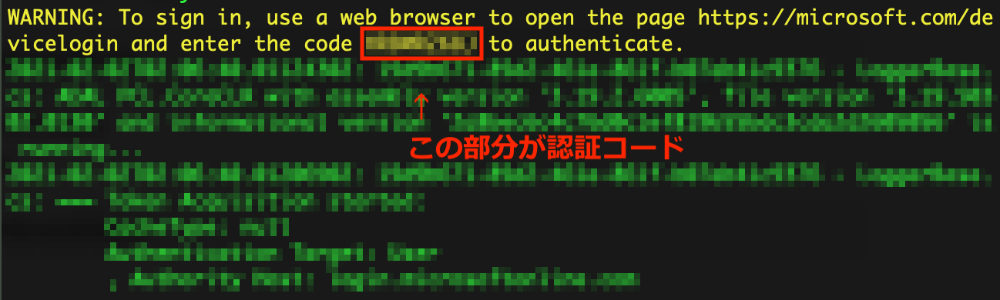

（令和3年2月2日 更新）
Teams：チームメンバーリストの取得
- ［課題］タブで課題を作成することにより，［成績］タブからチームメンバーの一覧が取得できる．
- しかし，チームメンバーが200名を超える場合は，Teams の仕様制限により，課題を作成することができない．この場合は，PowerShell の Teamsモジュールを利用することにより，チームメンバーのリストを得ることができる．
手順（macOS の場合）
- PowerShell をインストールする．※初回のみ
- ターミナルで PowerShell を起動
$ pwsh
PS >
- Microsoft-Teamsモジュールをインストールする．※初回のみ
PS > Install-Module -Name MicrosoftTeams
（何やら尋ねられるので，[Y] を入力して Enter）
- Microsoft-Teamsモジュールを読み込み
PS > Import-Module -Name MicrosoftTeams
- Microsoft-Teamsに接続
PS > Connect-MicrosoftTeams
（ここで認証します．ブラウザで https://microsoft.com/devicelogin に接続し，メッセージ内にあるコードを入力する）

- 対象のチームのグループIDを調べる．
（チームのURLの「...groupId=xxxxxxxx-xxxx-xxxx-xxxx-xxxxxxxxxxxx&...」の太字の部分がグループID）
- メンバー一覧を入手し，テキストファイル (member.txt) に書き出す．
PS > Get-TeamUser -GroupId （6で調べたグループID） >> member.txt
Teams：チームメンバーの一括登録
（作成中）